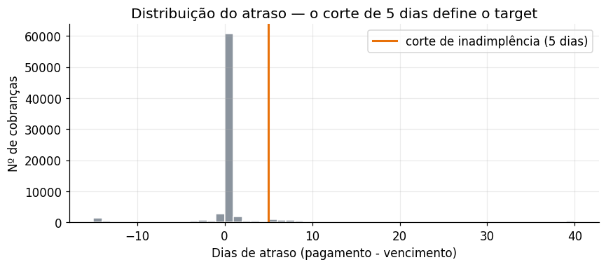
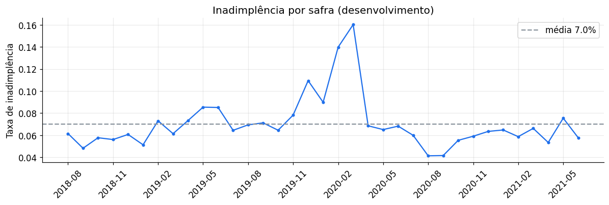
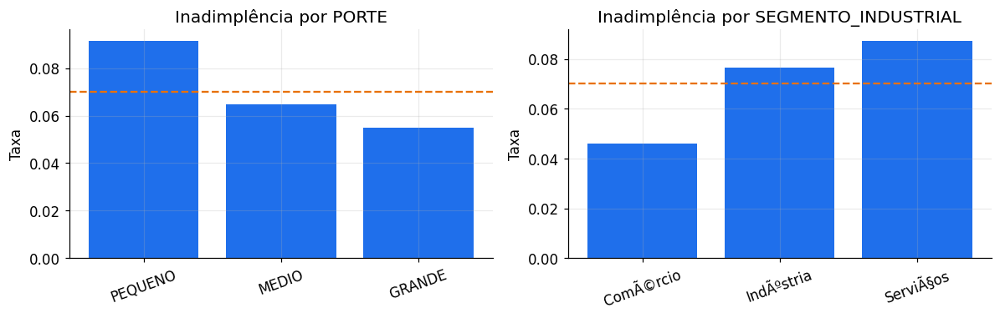
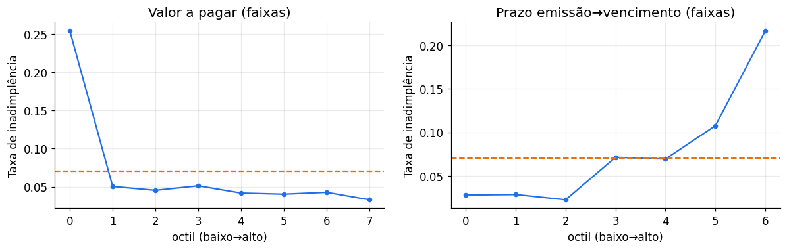
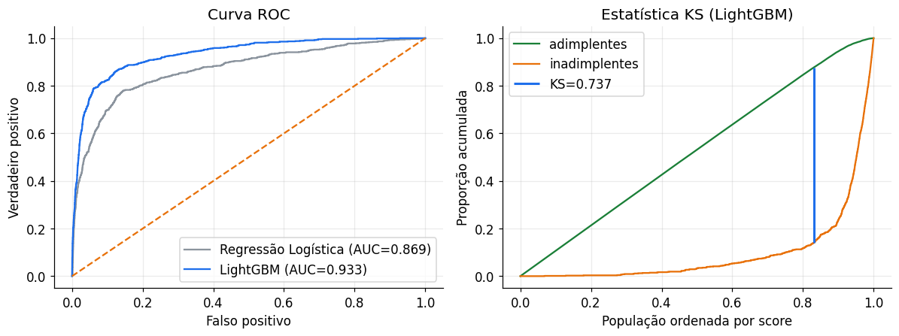
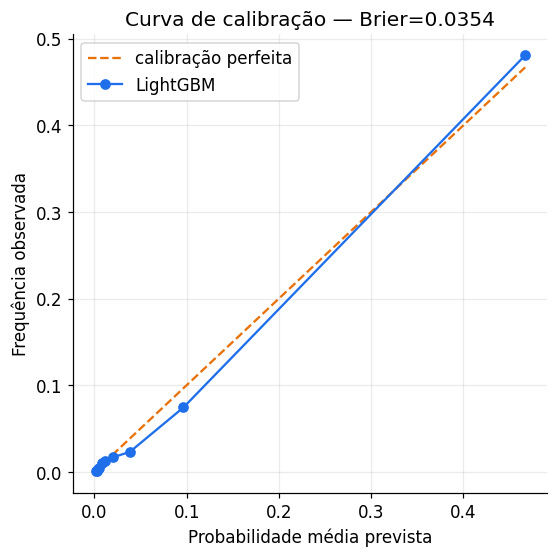
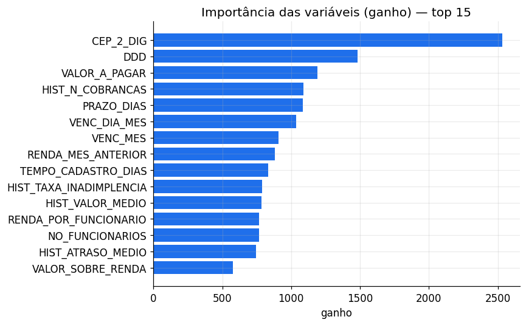
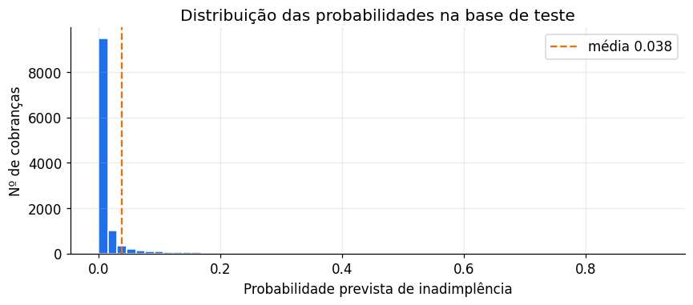

Resultado
Validação out-of-time — 6 meses inteiramente fora do treino (2021-01 a 2021-06).
Roteiro
01Contexto e objetivo
Uma instituição financeira roda, mês a mês, um sistema de cobrança. O objetivo é estimar com antecedência a probabilidade de que cada cobrança seja paga com atraso, para orientar ações proativas e reduzir a inadimplência.
Regra de negócioUm pagamento é considerado inadimplente quando é realizado com 5 dias ou mais de atraso em relação à data de vencimento.
Três princípios que guiaram todas as decisões
- Fidelidade ao ambiente de produção. O sistema roda periodicamente e só conhece o passado. Por isso toda variável de histórico é point-in-time e a validação é out-of-time — treino no passado, teste no futuro.
- A saída é uma probabilidade, não um rótulo. Isso muda escolhas técnicas: não rebalanceei as classes, otimizei por uma regra de score própria (log-loss) e auditei a calibração.
- Simplicidade justificada. Um baseline interpretável serve de referência — o modelo final só se justifica se superá-lo com folga.
02Os dados
Quatro tabelas relacionadas por ID_CLIENTE e SAFRA_REF (mês de
referência), em latin-1 com separador ; — ler com o encoding errado
corromperia as categorias.
| Base | Linhas | Grão | Papel |
|---|---|---|---|
base_cadastral |
1.315 | 1 por cliente | Atributos estáticos: porte, segmento, CEP, DDD |
base_info |
24.401 | cliente × safra | Renda e nº de funcionários mensais |
base_pagamentos_dev |
77.414 | cobrança | Histórico com data de pagamento → gera o target |
base_pagamentos_teste |
12.275 | cobrança | Cobranças recentes sem pagamento → prever |
O teste é o futuroO desenvolvimento cobre 2018-08 a 2021-06 (35 safras); o teste é 2021-07 a 2021-11 (5 safras), inteiramente posterior. Isso é um forecast real — e é exatamente por isso que a validação precisa ser temporal, nunca um split aleatório. 98,1% dos clientes de teste já aparecem no desenvolvimento.
Tratamento de ausentes
Nem todo nulo é dado faltante. FLAG_PF tem 95% de ausência, mas pelo dicionário a
ausência significa pessoa jurídica — vira 0/1. Já
RENDA_MES_ANTERIOR (2,9%), NO_FUNCIONARIOS (5,1%) e
VALOR_A_PAGAR (1,5%) têm nulos reais: em vez de imputar com média ou moda, deixei como
NaN — o LightGBM aprende nativamente o melhor lado do split, o que costuma ser mais
informativo. Categóricas com nulo (SEGMENTO 6,3%, DDD 18%,
PORTE 3,1%, DOMINIO_EMAIL 2,3%) ganham a própria categoria "ausente": a falta
de cadastro pode, por si só, carregar sinal.
03Construção do target
O passo mais crítico do case. O target só existe na base de desenvolvimento — a única com
DATA_PAGAMENTO.
ATRASO_DIAS = DATA_PAGAMENTO − DATA_VENCIMENTO
TARGET = 1 se ATRASO_DIAS ≥ 5, senão 0

Taxa base: 7,02% — 5.436 cobranças inadimplentes contra 71.978 em dia. Um desbalanceamento moderado, tratado sem reamostragem (ver seção 07).
04Análise exploratória
Entender o comportamento do target no tempo e por perfil, para guiar a engenharia de variáveis.

Há um pico claro em fev–mar/2020, no início da pandemia. É um choque macroeconômico pontual — um alerta para não confiar cegamente em variáveis de calendário e um reforço de que a validação tem que ser temporal.


05Engenharia de variáveis
Quatro blocos de variáveis. O de histórico comportamental é o mais poderoso — e o mais perigoso.
- Variáveis da própria cobrança — valor, taxa, prazo emissão→vencimento, mês de vencimento. Conhecidas na emissão, sem risco de vazamento.
- Enriquecimento cadastral — porte como variável ordinal (ordem econômica natural), tempo de casa do cliente na data da cobrança, CEP e DDD como categóricas.
- Enriquecimento mensal — join por
(ID_CLIENTE, SAFRA_REF). Pelo dicionário, renda e nº de funcionários se referem ao fim do mês anterior, então já são conhecidos no início da safra corrente e podem ser usados sem vazamento. Daí derivei duas razões financeiras: comprometimento de renda (VALOR/RENDA) e produtividade (RENDA/FUNCIONÁRIOS). - Histórico comportamental point-in-time — o passo anti-vazamento, detalhado abaixo.
O passo anti-vazamento
A intuição de crédito é que o melhor preditor de atraso futuro é o comportamento passado. Para cada cobrança quero saber quantas o cliente já teve, sua taxa histórica de inadimplência, atraso médio e máximo — usando somente safras estritamente anteriores. Calculado de forma ingênua, olhando toda a base, esse bloco vaza o target do futuro e infla o resultado. A construção vetorizada e segura:
- Resumir o histórico por
(cliente, safra). - Somar acumuladamente no tempo e subtrair a própria safra
(
cumsum − valor_da_safra), obtendo o acumulado estritamente anterior. - Mapear de volta para as cobranças por
(cliente, safra).
Para a base de teste — cujas safras são todas posteriores ao desenvolvimento — o histórico é o total acumulado do cliente em todo o desenvolvimento, que é justamente o que estaria disponível em produção.
Auditoria de vazamento
- Primeiras safras com histórico não-nulo: 0,0%. Nenhum cliente tem histórico na sua primeira aparição — como deve ser.
- corr(
HIST_TAXA_INADIMPLENCIA,TARGET) = 0,471. Preditiva, não perfeita. Uma correlação próxima de 1 seria a assinatura de vazamento.
Base de modelagem final: 77.414 × 32 no desenvolvimento e 12.275 × 29 no teste, com todas as linhas de teste preservadas. Razões com denominador zero viram ausentes.
06Estratégia de validação
Out-of-time, espelhando exatamente o cenário de produção.
Como o teste é o futuro do desenvolvimento, um train_test_split aleatório mentiria:
misturaria meses, vazaria padrões temporais e superestimaria o desempenho. Reproduzi o cenário real:
| Partição | Safras | Linhas | Taxa de inadimplência |
|---|---|---|---|
| Treino | 2018-08 → 2020-12 | 63.147 | 7,19% |
| Validação (OOT) | 2021-01 → 2021-06 | 14.267 | 6,29% |
| Teste (entrega) | 2021-07 → 2021-11 | 12.275 | sem rótulo |
Os 6 meses de validação espelham o horizonte do teste. A validação OOT serve tanto para comparar modelos quanto para escolher o número de árvores por early stopping. O modelo final é depois re-treinado em toda a base de desenvolvimento.
07Baseline e modelo principal
Baseline interpretável — Regressão Logística
Referência obrigatória: um modelo linear, transparente e fácil de explicar. Como não trata
NaN nem categóricas nativamente, montei um pipeline com imputação, padronização e
one-hot (categorias raras agrupadas), usando class_weight="balanced" apenas
internamente para o modelo aprender a minoria.
Modelo principal — LightGBM
Escolhido porque trata NaN e categóricas nativamente — sem imputação arbitrária nem
explosão de one-hot em CEP_2_DIG e DDD, que têm alta cardinalidade — e porque
captura não-linearidades e interações que a regressão logística não vê. É o padrão de mercado para
dados tabulares de crédito.
Três decisões coerentes com o objetivo de estimar uma probabilidade:
- Sem rebalanceamento. Under/oversampling distorce a probabilidade prevista —
justamente a saída pedida. Mantive a taxa natural de ~7%; a regularização leve
(
min_child_samples,subsample,reg_*) cuida do desbalanceamento sem viés. - Early stopping por
binary_logloss, não por AUC. A AUC só mede ordenação e ignora calibração; a log-loss é uma regra de score própria que premia probabilidades bem calibradas. Resultado: 569 árvores. - Sem recalibração posterior — a probabilidade crua já se mostrou calibrada (seção 08), então não adicionei complexidade sem ganho.
08Avaliação e calibração
Em risco de crédito, uma métrica não basta: avaliei poder de ordenação (AUC, Gini, KS) e qualidade da probabilidade (Brier, curva de calibração), além da PR-AUC, mais informativa sob classes desbalanceadas.
| Modelo | AUC | Gini | KS | PR-AUC | Brier |
|---|---|---|---|---|---|
| Regressão Logística | 0,8691 | 0,7382 | 0,6348 | 0,4461 | 0,1469 |
| LightGBM | 0,9330 | 0,8660 | 0,7374 | 0,6081 | 0,0354 |
O LightGBM ganha +0,128 de Gini sobre o baseline e reduz o Brier em 4× — a diferença mais relevante, já que o que se pede é uma probabilidade.

A probabilidade é confiável?

A média prevista (≈6,5%) coincide com a taxa observada (6,3%). Testei também recalibração isotônica e o Brier não melhorou (0,0354 → 0,0354). Mantive a probabilidade crua — decisão a favor da simplicidade.

As variáveis mais fortes combinam comportamento passado (HIST_*), características da
cobrança (VALOR_A_PAGAR, PRAZO_DIAS) e geografia (CEP_2_DIG,
DDD). A importância por ganho tende a favorecer variáveis de alta cardinalidade, então na
seção seguinte medi por ablação o quanto o histórico realmente contribui.
09Robustez e ablação
O desempenho é estável mês a mês?
| Safra | n | Taxa observada | AUC | KS |
|---|---|---|---|---|
| 2021-01 | 2.393 | 6,50% | 0,944 | 0,770 |
| 2021-02 | 2.146 | 5,90% | 0,960 | 0,824 |
| 2021-03 | 2.326 | 6,60% | 0,940 | 0,811 |
| 2021-04 | 2.358 | 5,30% | 0,924 | 0,753 |
| 2021-05 | 2.531 | 7,50% | 0,932 | 0,714 |
| 2021-06 | 2.513 | 5,80% | 0,941 | 0,752 |
AUC entre 0,924 e 0,960 nos seis meses — sem degradação ao longo do horizonte.
O modelo depende de atalhos?
Removi todo o bloco de histórico comportamental e re-treinei:
| Modelo | AUC | Gini | KS | PR-AUC | Brier |
|---|---|---|---|---|---|
| LightGBM sem histórico | 0,9205 | 0,8410 | 0,7305 | 0,5900 | 0,0369 |
| LightGBM completo | 0,9330 | 0,8660 | 0,7374 | 0,6081 | 0,0354 |
O histórico agrega +0,025 de Gini. O ponto importante é o inverso: mesmo sem ele o modelo já é forte (Gini 0,841) — sinal de que o desempenho não depende de vazamento disfarçado de variável.
10Modelo final e entrega
Fixado o número de árvores pela validação OOT, re-treinei o LightGBM em toda a base de desenvolvimento — aproveitando o máximo de dados, inclusive as safras mais recentes, que são as mais parecidas com o teste — e gerei as probabilidades.
Ponto decisivoA submissão usa predict_proba — probabilidade
contínua em [0, 1] — e não predict, que devolveria rótulo 0/1. O case
pede explicitamente a probabilidade.
- 12.275 linhas — bate exatamente com a base de teste.
- Colunas
ID_CLIENTE,SAFRA_REF,PROBABILIDADE_INADIMPLENCIA. - Todas as probabilidades em [0, 1], sem nulos.

A média prevista no teste é 3,82%, abaixo da taxa base de 7,02% do desenvolvimento. Não é um erro de calibração: a população de teste é de fato menos arriscada — sua taxa histórica média é 5,60%, contra 6,58% na validação.
11Conclusões e limitações
Por que a solução é sólida
- Sem vazamento: histórico point-in-time e auditado, validação temporal que espelha a produção, e ablação mostrando que o modelo não depende de atalhos.
- Saída fiel ao pedido: probabilidade calibrada via
predict_proba, sem rebalanceamento que a distorceria. - Simplicidade justificada: um único modelo, sem recalibração desnecessária, cada decisão explicável.
Limitações
- Choques macro — o pico de fev–mar/2020 não é previsível a partir do histórico. O modelo capta padrões estruturais, não crises exógenas.
- Variáveis de calendário (
VENC_MES) podem carregar sazonalidade específica de um ano; exigem monitoramento em produção. - Clientes novos, sem histórico, são previstos apenas pelo perfil cadastral e financeiro — sinal naturalmente mais fraco.
Próximos passos
- Monitoramento de estabilidade populacional (PSI) das variáveis e do score.
- Definição do ponto de corte conforme o custo de cobrança vs. perda esperada — transformar probabilidade em ação.
- Explicabilidade individual (SHAP) para apoiar a operação de cobrança.